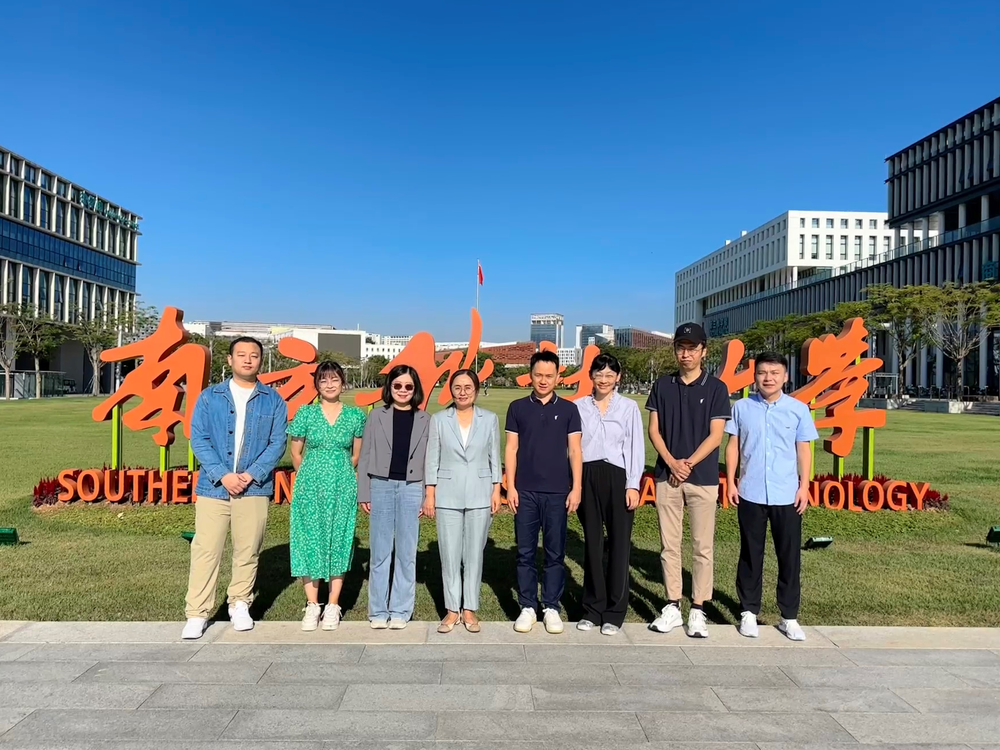
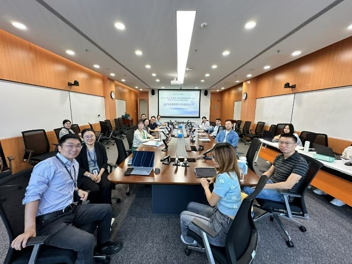

大湾区应用微观与公共政策研讨会（第二期）会议总结
2024年11月1日，大湾区应用微观与公共政策研讨会（第二期）在南方科技大学商学院顺利举办。此次研讨会以劳动和发展经济学议题为主，涵盖健康、养老、家庭、婚姻、教育、文化、创业等话题。会议由商学院叶茂亮副教授（研究员、博士生导师）组织并得到叶老师主持的学校科研启动配套经费项目资助。该系列研讨会于今年秋季开始举办，第一期为9月7号召开的第九届劳动经济学者论坛工作坊（中国深圳）暨中国劳动经济学者研讨会。



11月1日上午的上半场会议由南方科技大学商学院叶茂亮副教授主持。

（叶茂亮副教授主持开幕式）
开幕式后进入主旨演讲环节，国家高层次人才、国家社科基金重大项目首席专家、西南财经大学经济学院副院长邹红教授，ESSEC商学院亚太校区经济学系副教授、香港科技大学社会科学部副教授韩莉教授分别发表了以健康为主题的演讲。
邹红教授发表了题为《Long-Term Care Insurance (LTCI) Reform and the Rise of Firms and Innovation in China's Elderly Care Industry》的主题演讲。邹红教授的研究使用双重差分（DID）和事件研究方法，探讨了中国长期护理保险（LTCI）的改革对养老行业企业增长和创新的影响。利用LTCI在不同城市分阶段实施的事实，作者发现，该改革显著增加了护理机构的数量，刺激了企业入市并减少了退出。该政策还推动了技术的进步，这反应在与养老服务相关的专利活动的增加上。此外，改革提升了该行业的劳动需求，推高了教育要求并促进了招聘。更高的准入门槛和服务质量的提高进一步凸显了改革对护理准则的影响。总体而言，这项研究强调了LTCI在加强老年护理市场的供给侧动态中的关键作用，为旨在满足老龄化人口需求的政策制定者提供了关键见解。

（邹红教授演讲）
随后，韩莉副教授发表了题为《Ignorance is Whose Bliss: The Repeal of Compulsory Premarital Health Examinations and Marital Outcomes in Rural China》的主题演讲。健康对婚姻结果有重要影响，但在婚前可能难以察觉。作者通过构建匹配模型，综合分析社会经济地位（SES）和健康因素后发现，移除健康信息后，人们更倾向基于SES进行婚配，这导致子女的健康和福祉下降，该影响在低SES的群体中尤为显著。中国的实证研究表明，取消强制婚前健康检查后，婚后主观幸福感有所下降，这主要源于健康因素在婚姻匹配中的作用减弱，进而影响子女健康。女性和低SES群体受到的冲击最大，凸显了性别和财富差距的长期存在。

（韩莉副教授演讲）
茶歇过后，会议继续。上午的下半场会议由中国人民大学劳动经济系主任、劳动人事学院的赵丽秋教授主持。随后，苏丹博士生，香港中文大学（深圳）经管学院长聘副教授张鹏，以及首都经济贸易大学经济学院助理教授、清华大学中国经济思想与实践研究院兼职研究员息晨教授继续发表以健康为主题的演讲。
苏丹博士生发表了题为《Nutrition and Child Development: Evidence from the Student Nutrition Improvement Program》的主题演讲。该研究与浙江大学谢慧华研究员、香港中文大学（深圳）张鹏副教授合作，分析了学校营养计划对儿童发展的影响。通过利用中国各县分阶段实施该计划的事实，作者发现学校营养计划显著改善了受益儿童的身体健康、认知发展以及非认知和行为结果。异质性分析显示，该计划对边缘群体的影响更为显著，包括女孩和母亲受教育水平较低的儿童。影响的机制包括提升了家庭收入、改善了营养摄入、增加了对儿童的资金投入，以及采用了更为积极的育儿风格和互动的家庭氛围。此外，成本效益分析表明，因非认知和行为结果改善所带来的额外收益约占该项目整体收益的48.9%，这表明以往研究往往低估了学校营养计划所带来的收益。

（苏丹博士生演讲）
息晨助理教授发表了题为《Feeling the same heat? Urban–rural inequalities in adapting to extreme temperatures via electricity consumption》的主题演讲。该研究利用新颖的高频电力消费数据，探讨中国城乡居民在应对短期极端高温冲击和长期气候变暖时的适应情况是否存在差异。结果显示，城乡居民在短期极端高温事件中均增加了电力消费，但城市居民的反应更为强烈，揭示出明显的适应不平等。收入水平越高，适应能力也越强，城乡收入差距几乎完全解释了观察到的短期适应差异。在长期方面，作者发现，过去5到20年的气候变暖显著促进了城乡居民的适应策略，但两者之间并未表现出明显的差异。过去十年中，农村居民的收入增长较快，使他们能够购买与城市居民相当的耐用适应设备。

（息晨助理教授演讲）
11月1日下午的上半场会议由香港中文大学（深圳）的张鹏副教授主持。中山大学国际金融学院教授、国家重大人才工程青年人才李腾教授，中国人民大学劳动人事学院教授、劳动经济系主任赵丽秋教授，以及南方科技大学商学院叶茂亮副教授发表了以教育为主题的演讲。
李腾教授发表题为《Beyond the Cutoff: How Marginal Admission to Elite Universities Affects Long-term Outcomes》的主题演讲，探讨了勉强通过精英大学录取分数线而就读精英大学对个人生活的长期影响。

（李腾教授演讲）
赵丽秋教授发表题为《Affirmative Action in Chinese College Admission and Education》的主题演讲。该研究探讨了中国特殊高考招生政策（SCAP）的影响，此政策是一项基于地域的平权行动计划，为贫困农村地区的学生保留部分重点高校名额。作者发现该政策显著提高了目标学生的教育水平。平均而言，符合该政策的学生受教育年限增加了0.7年，四年制大学入学率提高了7.5个百分点，三年制大学入学率提高了9.2个百分点。SCAP对教育的影响远超单纯依靠保留名额所能实现的效果。该政策可能可以通过激励个人和地方政府，促进高中学业入学率的提高以及私人和公共教育投资的增加，从而改善教育状况。

（赵丽秋教授演讲）
叶茂亮副教授发表题为《Education and Satisfaction with Government Performance: Evidence from China》的主题演讲。研究发现，教育降低了人们对政府表现的满意度。机制分析支持“批判性公民”假说。

（叶茂亮副教授演讲）
11月1日下午的下半场会议由李腾教授主持。中国人民大学劳动人事学院院长、就业与民生研究院院长、吴玉章讲席教授、教育部“长江学者”特聘教授赵忠，以及南方科技大学商学院助理教授谢健发表以文化为主题的演讲。
赵忠教授发表了题为《Culture Matters! Clan Culture and Gender Division of Labor in Rural China》的主题演讲。该文研究了作为中国文化史标志的家族型文化，是否以及如何影响当前中国农村家庭内部性别分工。

（赵忠教授演讲）
谢健助理教授发表题为《Surname Diversity of Entrepreneurs and Corporate Innovation》的主题演讲。该文研究了县级企业家姓氏多样性与企业创新之间的关系。尽管姓氏多样性可能会促进信息交流和新观念的产生，但在较不发达的经济体中，姓氏同质性能够作为法律和市场力量的替代品。作者利用中国私营企业登记数据计算了企业家姓氏多样性。研究发现，企业家姓氏的多样性越大，企业的创新能力反而受到抑制。这是因为在一个地区内，姓氏同质性可以提供更好的财产权保护，增强供应链合作，并有助于吸引和整合人才资源。然而，随着时间的推移，姓氏多样性的负面影响逐渐减弱，这主要得益于法律环境和市场机制的改善。

（谢健助理教授演讲）
最后，叶茂亮副教授对会议做了简要总结。至此，本次会议圆满结束。